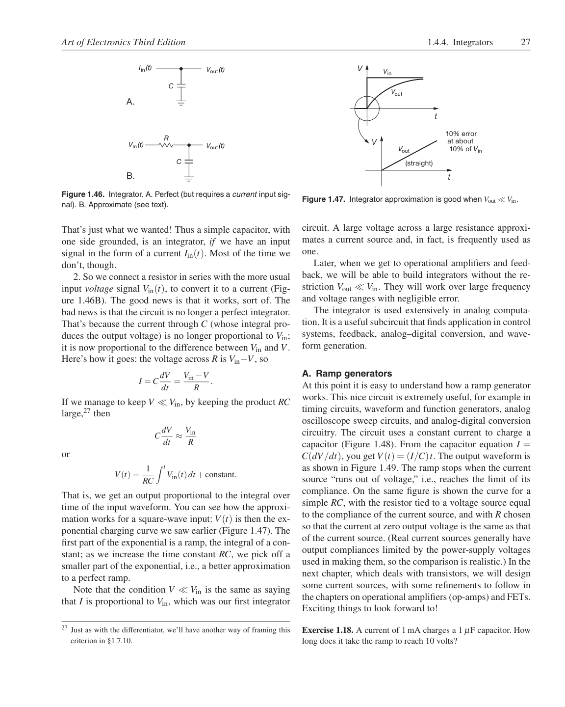

<!doctype html>
<html lang="en"><head><meta charset="utf-8"><meta name="viewport" content="width=device-width,initial-scale=1">
<title>Page 27 of 70</title><meta name="source-page" content="27"><link rel="stylesheet" href="../styles.css">
<link rel="prev" href="page-026.html"><link rel="next" href="page-028.html"></head><body>
<header><div><a class="back" href="../index.html">All pages</a> <span class="meta">Source page 27 / 70</span></div>
<nav class="nav" aria-label="Page navigation"><a href="page-026.html">Previous</a><a href="page-028.html">Next</a></nav></header>
<main><h1 class="meta">Page 27</h1><figure class="sheet"></figure>
<details class="transcript" open><summary>Fetchable text — page 27</summary><div class="text"><p>Art of Electronics Third Edition
1.4.4. Integrators
27</p><p>Iin (t)</p><p>Vout (t)</p><p>V
Vin</p><p>C</p><p>Vout</p><p>A.</p><p>t</p><p>R</p><p>V</p><p>Vin (t)</p><p>Vout (t)</p><p>Vout</p><p>10% error at about 10% of Vin</p><p>C</p><p>(straight)</p><p>B.</p><p>t</p><p>Figure 1.47. Integrator approximation is good when Vout ≪Vin.</p><p>Figure 1.46. Integrator. A. Perfect (but requires a current input signal). B. Approximate (see text).</p><p>circuit. A large voltage across a large resistance approximates a current source and, in fact, is frequently used as
one.</p><p>That’s just what we wanted! Thus a simple capacitor, with
one side grounded, is an integrator, if we have an input
signal in the form of a current Iin(t). Most of the time we
don’t, though.</p><p>Later, when we get to operational amplifiers and feedback, we will be able to build integrators without the restriction Vout ≪Vin. They will work over large frequency
and voltage ranges with negligible error.</p><p>The integrator is used extensively in analog computation. It is a useful subcircuit that finds application in control
systems, feedback, analog–digital conversion, and waveform generation.</p><p>2. So we connect a resistor in series with the more usual
input voltage signal Vin(t), to convert it to a current (Figure 1.46B). The good news is that it works, sort of. The
bad news is that the circuit is no longer a perfect integrator.
That’s because the current through C (whose integral produces the output voltage) is no longer proportional to Vin;
it is now proportional to the difference between Vin and V.
Here’s how it goes: the voltage across R is Vin−V, so</p><p>I = C dV</p><p>dt = Vin −V</p><p>R
.</p><p>If we manage to keep V ≪Vin, by keeping the product RC
large,27 then</p><p>C dV</p><p>dt ≈Vin</p><p>R
or</p><p>A. Ramp generators
At this point it is easy to understand how a ramp generator
works. This nice circuit is extremely useful, for example in
timing circuits, waveform and function generators, analog
oscilloscope sweep circuits, and analog-digital conversion
circuitry. The circuit uses a constant current to charge a
capacitor (Figure 1.48). From the capacitor equation I =
C(dV/dt), you get V(t) = (I/C)t. The output waveform is</p><p> t</p><p>V(t) = 1</p><p>Vin(t)dt +constant.</p><p>RC</p><p>That is, we get an output proportional to the integral over
time of the input waveform. You can see how the approximation works for a square-wave input: V(t) is then the exponential charging curve we saw earlier (Figure 1.47). The
first part of the exponential is a ramp, the integral of a constant; as we increase the time constant RC, we pick off a
smaller part of the exponential, i.e., a better approximation
to a perfect ramp.</p><p>Note that the condition V ≪Vin is the same as saying
that I is proportional to Vin, which was our first integrator</p><p>as shown in Figure 1.49. The ramp stops when the current
source “runs out of voltage,” i.e., reaches the limit of its
compliance. On the same figure is shown the curve for a
simple RC, with the resistor tied to a voltage source equal
to the compliance of the current source, and with R chosen
so that the current at zero output voltage is the same as that
of the current source. (Real current sources generally have
output compliances limited by the power-supply voltages
used in making them, so the comparison is realistic.) In the
next chapter, which deals with transistors, we will design
some current sources, with some refinements to follow in
the chapters on operational amplifiers (op-amps) and FETs.
Exciting things to look forward to!</p><p>27 Just as with the differentiator, we’ll have another way of framing this
criterion in §1.7.10.</p><p>Exercise 1.18. A current of 1 mA charges a 1 μF capacitor. How
long does it take the ramp to reach 10 volts?</p></div></details></main>
<footer>Visual layout, figures, tables, equations, footnotes, and original printed page number are preserved in the lossless page image. <a href="../text/page-027.txt">Plain text</a> · <a href="../data/page-027.json">JSON</a></footer>
</body></html>